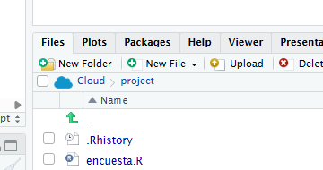

Primer paso. Preparar el entorno de trabajo
Objetivo
En este primer paso vamos a preparar el entorno de trabajo y familiarizarnos con R y Posit.Cloud.
Puntualmente, vamos a ver:
- qué es R;
- cómo usarlo en la nube;
- cómo utilizar la interfaz de Rstudio;
- cómo cargar paquetes.
¿Qué es R?
R es un lenguaje de programación para análisis de datos y computación científica. Es una herramienta libre, gratuita y multiplataforma. Podés acceder a la página del proyecto por acá: The R Project for Statistical Computing.
Para usar R y RStudio hay dos caminos:
- instalar R y RStudio en nuestra computadora;
- usar una versión en la nube desde el navegador.
En este taller vamos a ir por la segunda opción, y vamos a usar Posit.Cloud con plan gratuito.
Pero, si te interesa usar R para proyecto más grandes o con datos que no querés subir a una nube, tenés que descargarte R e instalarla tu computadora, a través de CRAN: El archivo oficial de R.
¿Qué es un IDE? / ¿Qué es RStudio?
R puede usarse directamente desde una consola. Sin embargo, para trabajar de manera más cómoda solemos usar un programa adicional: un entorno integrado de desarrollo (IDE, en inglés) que nos ofrece una interfaz visual y herramientas para facilitar la escritura y ejecución del código.
Entre los posibles IDEs para R, vamos a usar RStudio, el cual se encuentra disponible en Posit.Cloud.
Si estás trabajando en local, podés descargar gratuitamente RStudio versión escritorio.
En Posit.CLoud, un proyecto es la unidad de trabajo, donde se reúne código, datos, y archivos en un mismo espacio. Hay distintos tipo de Proyectos, pero aquí vamos a usar RStudio.

Guía oficial: Get Started with Posit Cloud.
¿Cómo usar RStudio?
Cuando se abre RStudio, la pantalla se organiza en paneles.

Los cuatro paneles principales son:
| Panel | Para qué sirve |
|---|---|
| Source | Escribir y guardar código en scripts (archivos de texto) |
| Console | Ejecutar comandos de R y mostrar resultados / respuestas |
| Environment | Ver objetos cargados en memoria |
| Output | Ver archivos, gráficos, paquetes, ayuda y visualizaciones |
Guía oficial: RStudio User Guide - Pane Layout.
En este proyecto vamos a leer una base directamente desde internet, de modo que no necesitamos subir archivos al proyecto. Pero, si querés trabajar con una planilla o dataset que tenés en local, la podes importar desde la tab de Files que está en el panel de Outputs:

¿Dónde va nuestro código?
Para empezar, vamos a escribir y ejecutar algunas instrucciones simples en R.
En RStudio podemos ejecutar código de dos maneras:
- escribiendo directamente en la Console;
- escribiendo en un script y ejecutando línea por línea.
En este taller vamos a usar scripts, porque nos permiten guardar el código, corregirlo y volver a ejecutarlo más adelante.
Para crear un script nuevo:
File > New File > R ScriptTambién se puede usar el botón de archivo nuevo en la parte superior izquierda de RStudio.
Una vez abierto el script, escribimos:
2 + 2Para ejecutar esa línea, ubicamos el cursor sobre ella y usamos:
Ctrl + EnterTambién podemos hacer clic en el botón Run. El resultado aparece en la Console:
[1] 4R también nos permite guardar valores en objetos (variables), utilizando el operador de asignación <- .
mi_numero <- 10
mi_otro_numero <- 15
mi_texto <- "Hola, R"Cuando ejecutamos este código, el objeto aparece en el panel Environment. Ese panel muestra los objetos que tenemos cargados en memoria durante la sesión de trabajo.
Luego, podemos ver estos objetos, u operar sobre ellos.
mi_numero # si no hacemos nada, se muestra en pantalla
mi_texto
mi_numero > mi_otro_numero # si hacemos una operacion muestra el resultado
mi_nuevo_numero <- mi_numero + mi_otro_numero # o podemos guardar el resultado de una operación en una variable nueva
mi_nuevo_numero¿Qué son los paquetes?
R viene con muchas funciones básicas, pero para trabajar con datos solemos usar paquetes adicionales. Un paquete es un conjunto de funciones, datos y herramientas que amplían lo que podemos hacer con R.
En este taller vamos a usar principalmente el paquete tidyverse, que reúne varias herramientas para leer, transformar, analizar y graficar datos.
Para instalarlo, ejecutamos:
install.packages("tidyverse")La instalación se hace una sola vez en cada entorno de trabajo.
Después de instalar un paquete, hay que cargarlo en la sesión de R para poder usarlo.
library(tidyverse)Esta operación sí hay que repetirla cada vez que iniciamos una nueva sesión o abrimos nuevamente el proyecto.